RTR: Imperium Surrectum
RTR: Imperium SurrectumMinor Greeks 3: mainland Greece
2023-08-17 · Tarnholm
Hello! It's me again, bringing you all some more Greek minors.
MAINLAND GREECE
Starting from the West, our first new faction in good old Hellas is the AKARNANIAN LEAGUE. Akarnania is a small region of Greece, back then as much as now, tucked away in the westernmost corner of central Greece and sandwiched between Aitolia and Epeiros. The area lacked good anchoring places and was thus hardly involved in the maritime trade of the Aegean and Ionian seas. This explains why the Akarnanians were often characterised as conservative, if not backwards, peasants by observers like Thucydides. In the Archaic period, the Corinthians had founded coastal colonies at Anaktorion and on the island of Leukas. Still, these remained separated from the interior until the late 5th century BC, when Akarnania grew together during the Peloponnesian War to resist outside pressure. A Koinon (league) of the Akarnanians is first attested for the year 389 BC, with a capital at Stratos. In the following decades, they started minting their own coins in the Corinthian style, established their own federal laws and assemblies and integrated Leukas. However, the Akarnanian League fell under the Epirote influence in the time of Pyrrhos, and already in 330 BC, Oiniadai, the second largest city of Akarnania, had been conquered by the Aitolians. With the Aitolian League's rise after the death of Alexander, Akarnania was constantly wedged between the two neighbouring powers. In 263 BC, the Akarnanians managed to sign alliances with both. Still, only a decade later, Epirotes and Aitolians decided to dissolve the league and divide the country between them, with the eastern part falling to Aitolia and the west to Epeiros. When the dynasty of Pyrrhos was overthrown in Epeiros in 230 BC, Western Akarnania regained its independence and refounded the League. Ongoing military support by the Antigonids allowed the liberation of Eastern Akarnania aside from Stratos in 218 BC. Yet, only six years later, Aitolia concluded an alliance with Rome and the new coalition overran Akarnania. Further invasions by Romans, Aitolians and Seleucids followed until Tyrrheion became the capital of a pro-Roman Akarnanian 'client state' in 167 BC. The region declined afterwards and was devastated in the context of the Battle of Actium in 31 BC. As a conservative and mountainous region, Akarnania mainly produced Hoplites and slingers. The deadly effect of the Akarnanian slings was especially felt during the Peloponnesian War when Athenian expeditions into the region suffered as much here as in Aitolia. Therefore, They have been given these well-known warriors in RIS and unique Hoplites.
The remains of the theatre of Stratos, Akarnania:
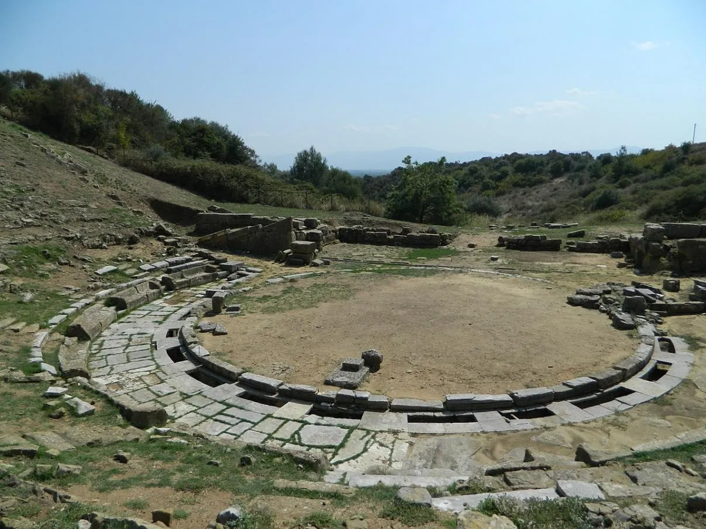
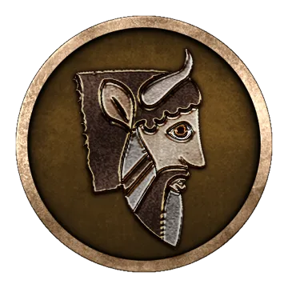
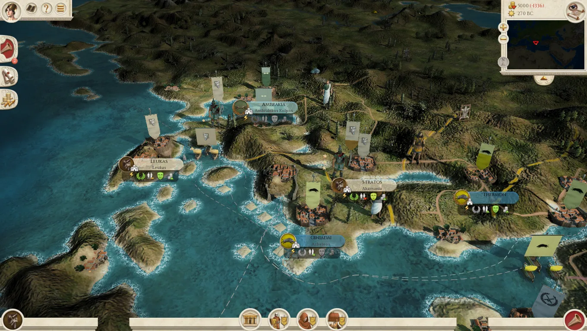
Akarnanian Slingers:
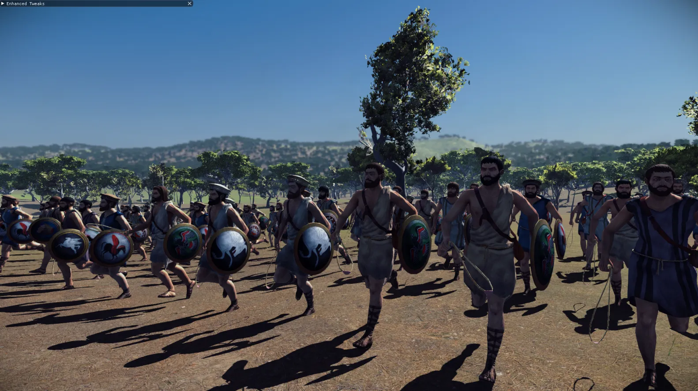
Akarnanian Hoplites:
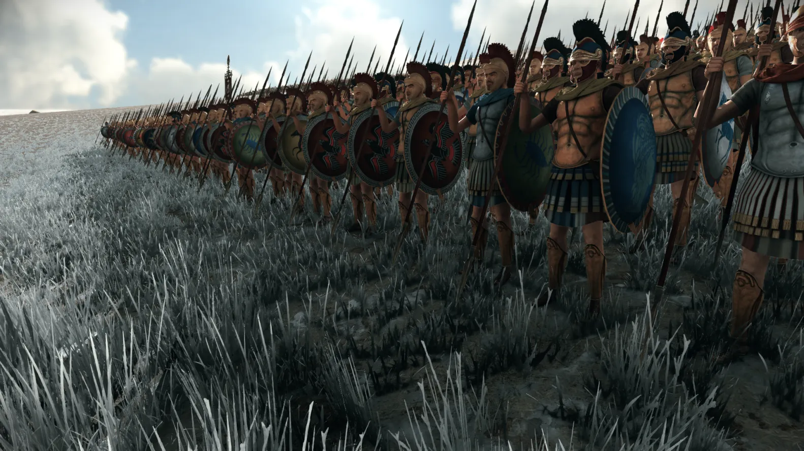
Our second addition in Greece is the THESSALIAN LEAGUE. Like Taras, Thessaly was occupied by a foreign power - in this case, Macedon - in 270 BC, but it can re-emerge during the campaign. While Thessaly, like Akarnania, was usually the object of imperial ambitions by neighbouring powers in its (ancient) history, it did enjoy a period of grand influence during the second quarter of the 4th century BC, when powerful tyrants such as Jason of Pherai commanded great armies that terrified their rivals and could defeat formidable foes such as the Boiotians, Macedonians or Athenians in major battles. The proudest arm of any Thessalian army was the heavy cavalry. Situated in central Greece inland from the Aegean, Thessaly boasted - and still boasts - the largest and widest plains in Greece and thus, the Thessalians developed a tradition of horse breeding. Although the period of important Thessalian tyrants ended and Thessaly fell under Macedonian control, its horsemen played a starring role in the army of Alexander the Great, and they were highly sought after by his successors. Though officially independent from Macedon, the Antigonid kings fulfilled the role of Thessalian Strategos in the Hellenistic period, and the foundation of Demetrias in 294 BC had planted an unassailable Macedonian stronghold into Thessaly. The new Thessalian capital was known as one of the "fetters of Greece" and was defended by a sizable Antigonid garrison, which helped to undermine Pyrrhos' plan to re-establish an independent Thessalian League. Instead, Thessaly remained Macedonian until the second Roman-Macedonian War, after which Rome reconstituted it. Yet, it never again became a powerful player in the region, and when Augustus was elected Strategos of the League in 27 BC, it was clear to everyone that Thessaly was now a Roman possession in everything but name.
The plains of Thessaly
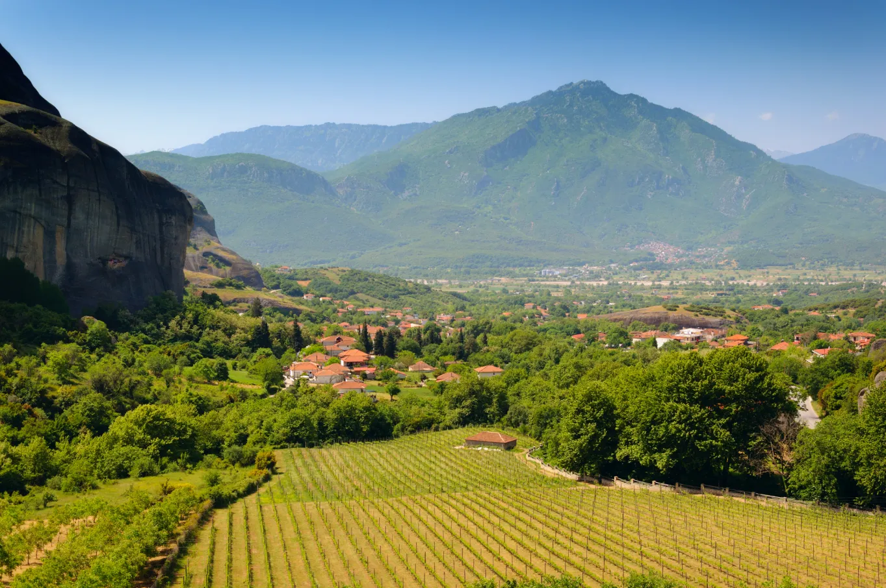
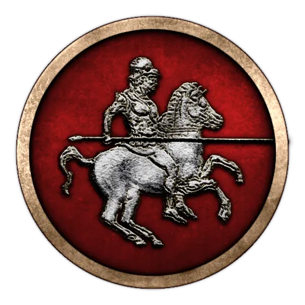
The Thessalian League can spawn due to revolts.
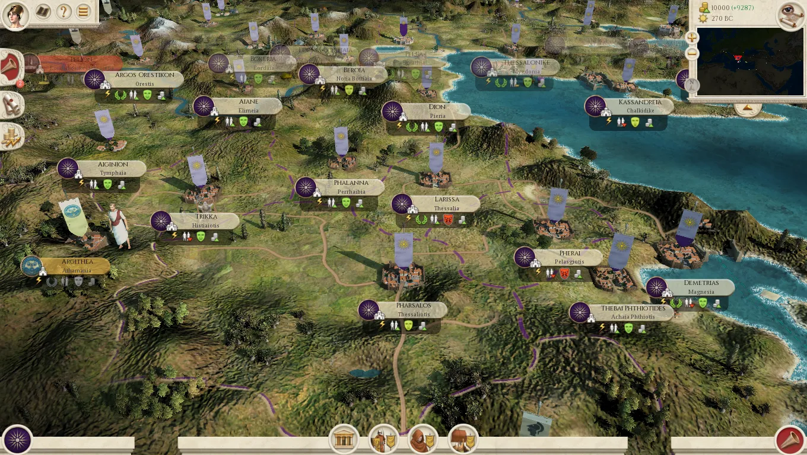
Thessalian Lancers:
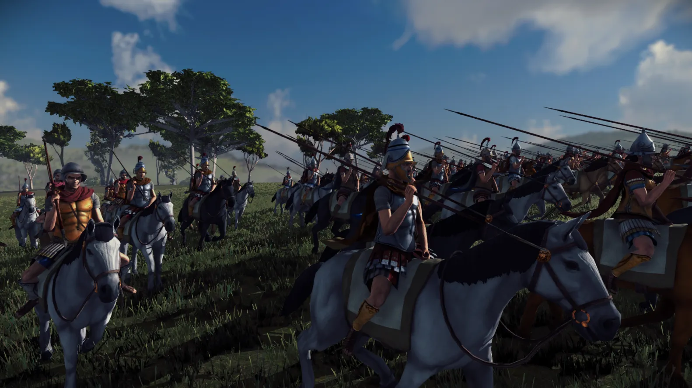
Perrhaibian Cavalry:
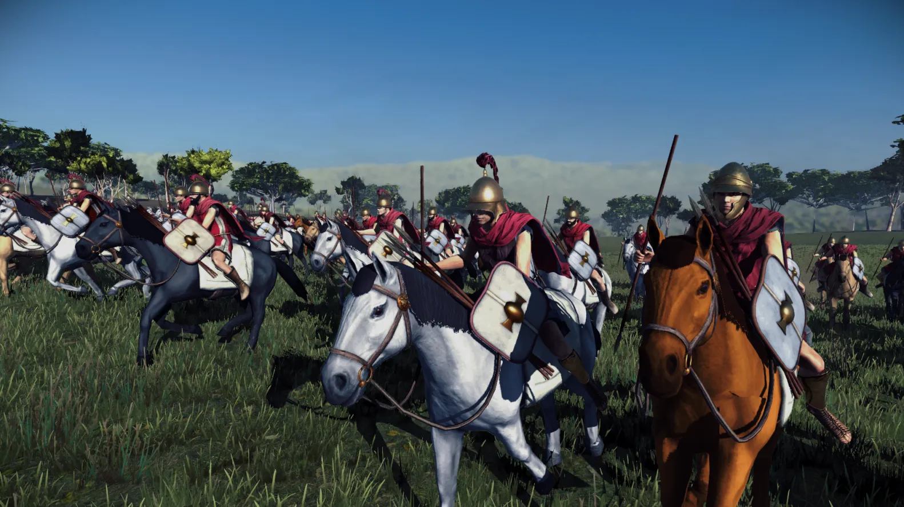
Faction number three brings us to the Peloponnese. In the Northwest of the peninsula, ELIS is famous for holding control over the Olympic Games. The city of Elis was only founded in the 5th century BC as the political centre of the landscape. Still, it quickly became an important regional power, claiming the hegemony over Olympia and the Pisatis in the south and Lepreon in Triphylia further down the coast. Originally a stout Spartan ally - and remaining unwalled for most of its history, like Sparta, Elis turned against its former master by the turn of the 4th century BC and then fought in various alliances, which led to some successes, but also the loss of Lepreon. In the early 3rd century BC, Elis sought an alliance with the Aitolians to regain Lepreon. The Aitolians equally profited from the coalition since the Elians contributed their famous Hoplites, who were made up of pairs of male lovers, just like in Thebes, and Aitolia lacked reliable heavy infantry. In 245 BC, the Aitolians invaded Boiotia while Elis invaded Triphylia, and both attacks ended in brilliant successes. While the Boiotian League became subservient to the Aitolians for the next few years, Elis re-occupied Lepreon and may have officially joined the Aitolian League. Yet, in 219 BC, Philip V of Macedon launched a campaign against Elis and took Lepreon away from the Elians once more. The city was later forced to join the Achaian League, and Lepreon was only returned to Elis by the Romans in 146 BC. And though the city does not exist today, the region is still called Elis, including Triphylia.
The Theater of Elis:
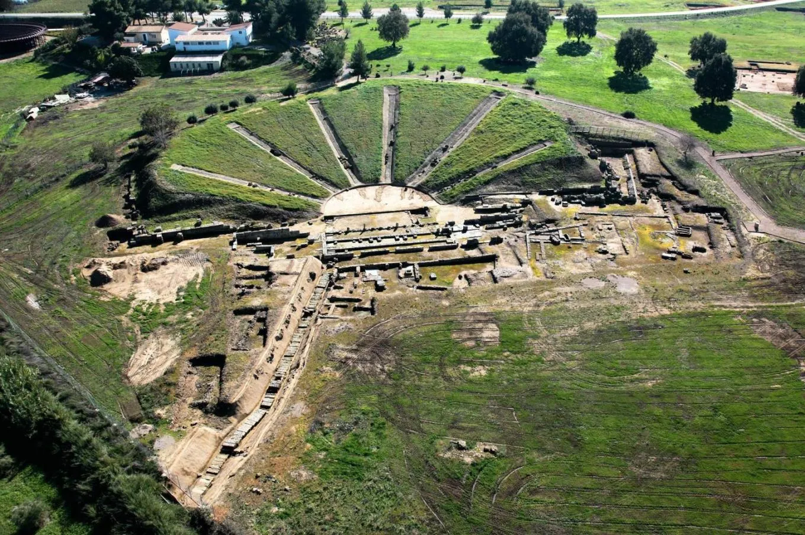
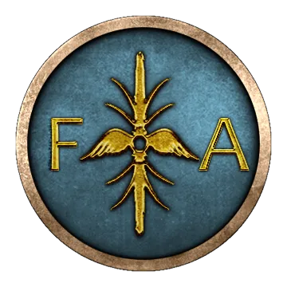
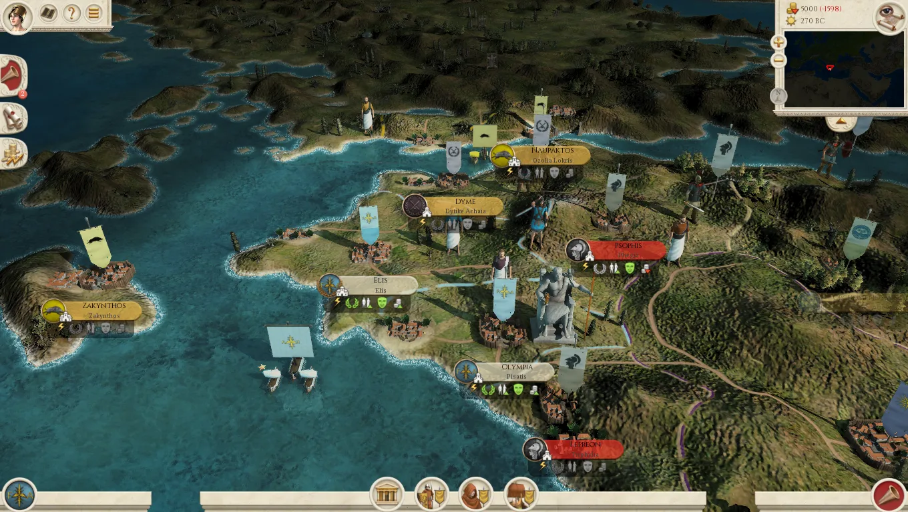
Elean Ephebes:
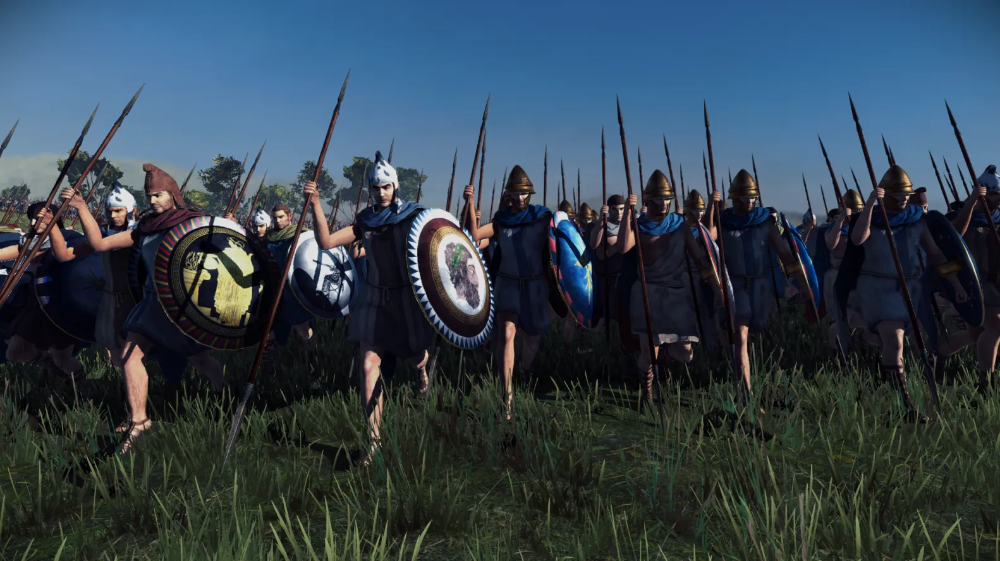
Elean Hoplites:
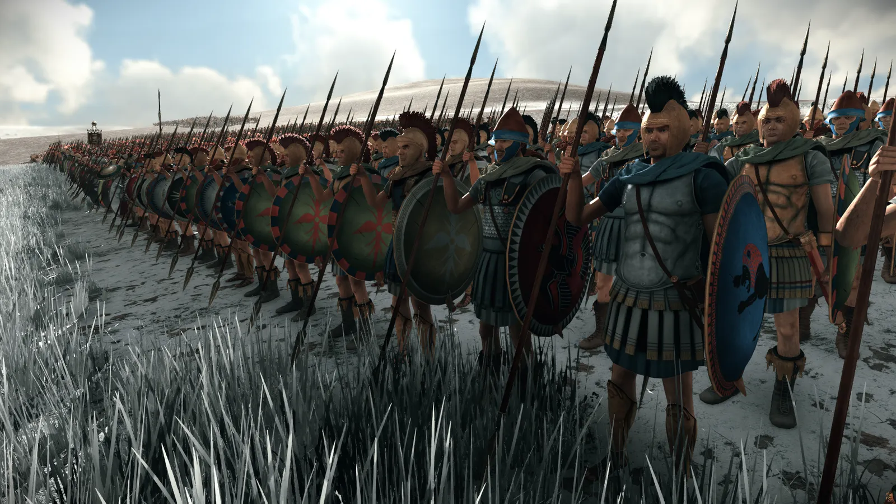
The second new addition to the Peloponnese is MESSENE. Messenia was the home of Nestor in the Iliad. Still, most people will know it from the two Messenian wars in the Archaic period, during which the Spartans conquered Messenia and turned its inhabitants into Helots. Yet, after the Thebans crushed the Spartiates at the battle of Leuktra in 371 BC, Messenia regained its independence, with Messene its capital. The Messenians quickly introduced their own laws, weights, coins and standards and built one of the most impressive walls in Greece to protect their city. The first and foremost goal for the Messenians always was to remain independent of Sparta. Successive alliances with Athens, Macedon and Aitolia eventually led to Messene joining the Aitolian League along with Elis in 245 BC. Yet, the Aitolians blindly plundered the area in 220 BC, upon which the Messenians joined the Achaian League instead, before rejoining the Aitolians less than a decade later after Achaia's ally Philip V of Macedon had brutally occupied the acropolis on Mount Ithome. After Aitolia had become an ally of the Roman Republic in 212 BC, Messene then voluntarily submitted to Rome, but the Romans failed to save Messene from Nabis of Sparta in 201 BC. Only days later, an Achaian army under their Strategos Philipoimen of Megalopolis arrived, forcing the Spartans to retreat. The Messenians, however, did not thank Achaia for the intervention and in 191 BC, they had to be forced to rejoin the league. Another decade later, Messene rebelled, and in trying to quell the resistance, Philopoimen was killed. Are you confused yet? This is not the end: After the destruction of the Achaian League in 146 BC, the Romans liberated Messene, but they also freed Sparta, and the two rivals immediately resumed their hostilities. They continued to fight over a small stretch of land called Dentheliatis, an object of discord since the early days. During the Roman civil wars, the events here were largely ignored. Still, in the 30s BC, Eurykles became ruler of Sparta and 20 years later, he managed to overrun significant parts of Messenia and plunder it. Augustus was not amused, however, and forced Eurykles into exile. His successor Tiberius then decided that the Dentheliatis should be Messenian, and now the decision was accepted for good.
The walls of Messene
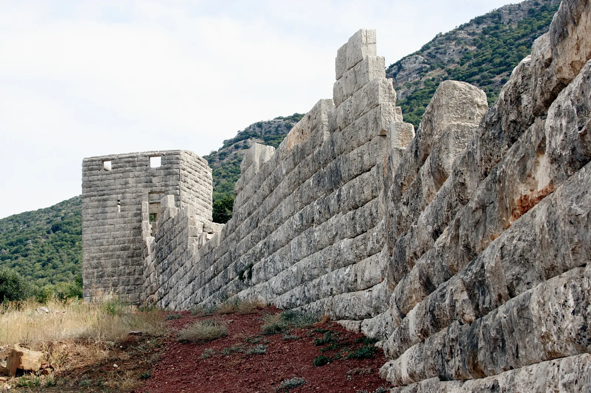
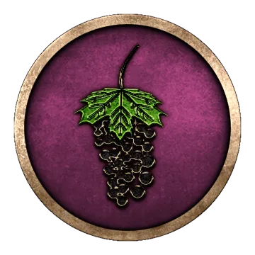
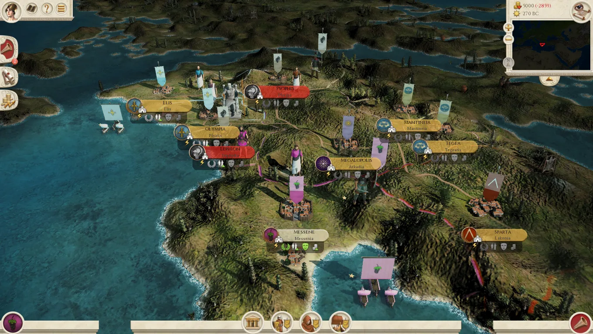
Next up, we have two emergent factions on the Peloponnese as well. ARGOS will need no introduction, as it was one of the most significant Greek city-states and the arch-enemy of Sparta. Since the 5th century BC, Argos had been a bastion of democracy, and during the Peloponnesian War, it fought on the side of Athens. Yet, the home of the hero Perseus, which even managed to annex Corinth in 392 BC, had lost much of its former glory in the 4th century BC. The Argeads Philip II and Alexander - Macedonian kings of a dynasty that initially hailed from Argos, hence the name Argeads - and the diadochi had already interfered in Argive affairs regularly, but by 270 BC, Argos was under the rule of the tyrant Aristippos. He had been selected and installed by Antigonos Gonatas, king of Macedon, only two years before and was a loyal servant. Hence, Argos starts the RIS campaign under Antigonid control, and historically, it would remain under their influence until the end of the century, when the Achaians killed Aristippos homonymous grandson. His brother Aristomachos threw in his lot with the Achaian enemy and joined their league in 229 BC. The 220s were dominated by the Kleomenean War (228-222 BC) between Sparta and the Achaians. However, Aristomachos soon betrayed the Achaians to side with Sparta, thus regaining autonomy for Argos. The independence was short-lived, however, as the Achaians called Macedon for help, and the new coalition captured Argos and crushed Kleomenes III of Sparta in 223-222 BC. Aristomachos was executed, and Argos was re-integrated into the Achaian League. The elite Hoplite regiment of Argos, the Epilektoi, therefore, became a regiment of the Achaian army, one of its few professional units at the time. Only a few years later, however, Argos regained its effective independence once more and fought various wars with Sparta until returning to the Achaian League for good in 191 BC.
The Greek theater of Argos:
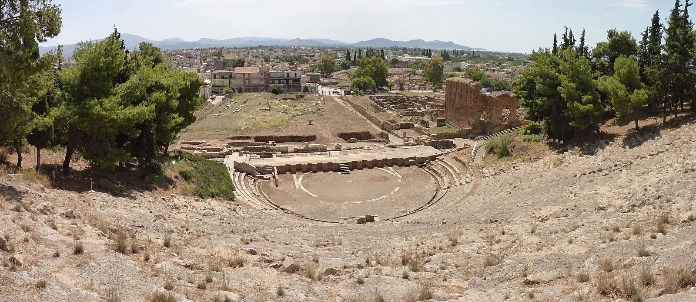
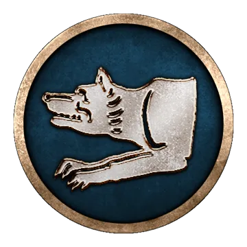
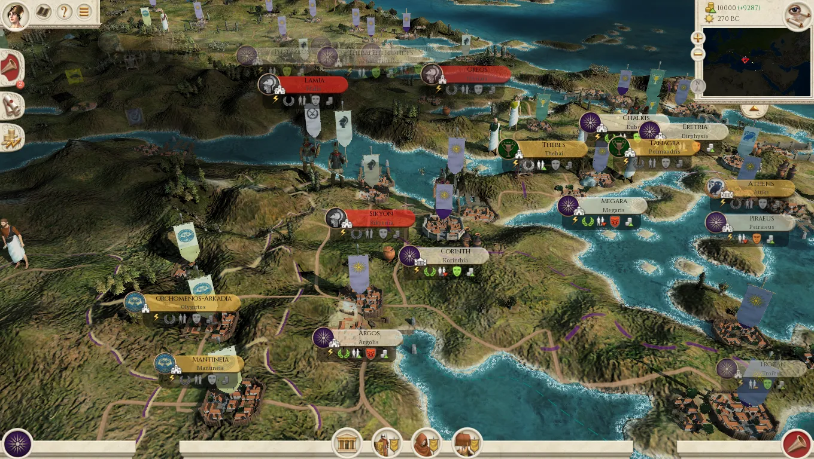
Argive Epilektoi:
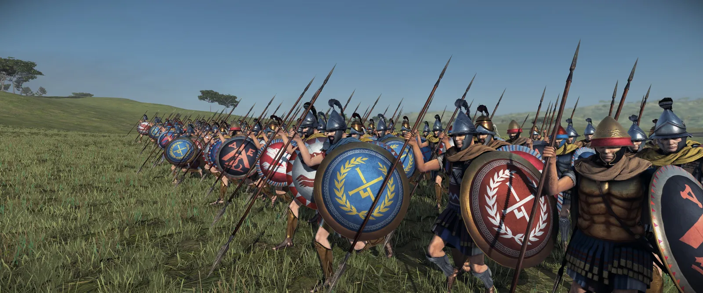
The situation in MEGALOPOLIS in the central Peloponnese was similar. Megale Polis, the big city, had been founded by the Thebans/Boiotians after their victories over the Spartans in the period 371-362 BC to block any Spartan expansion into Arcadia in the North. However, the foundation soured relations with the remaining Arcadians, whose principal cities, Tegea, Mantineia and Orchomenos, felt disregarded by the victors. After the sudden demise of Theban hegemony in Greece, Megalopolis quickly decided to support Philip II of Macedon. Accordingly, it stayed loyal to Alexander during the so-called Mice War (334-331/330 BC), when the Peloponnesian cities and Athens rose up in revolt against the Macedonian king, who was far away in Asia. The rebels immediately besieged Megalopolis, but since the vast walls of the city could not easily be overcome, they lost valuable time, which gave Alexander's governor of Greece, Antipatros, the chance to defeat them. When Alexander received the message of Antipatros' victory after his own triumph at Gaugamela, he is said to have stated: "I am conquering the world, and Antipatros won a war against mice." Megalopolis continued its pro-Macedonian policy in the following decades and thus starts under Antigonid control, just like Argos. Aristodemos the Good was a loyal and friendly tyrant who successfully pushed back a Spartan invasion in 262 BC. Yet, a tyrant is a tyrant, and ten years later, two philosophers conspired to kill Aristodemos. Megalopolis returned to democracy and survived another Spartan attack in 249/248 BC before Lydiadas, a man of the people, seized power in 242 BC and erected a new tyranny. However, Lydiadas was as nice a despot as Aristodemos and abdicated in 234 BC in exchange for the office of strategos of the Achaian League. Now part of Achaia, Megalopolis was attacked by Kleomenes III of Sparta in 227 BC, and Lydiadas fell in battle. Megalopolis remained part of the Achaian League, and the koinon's most famous Strategos, Philopoimen, was born here in 253 BC. Under his predecessor, Megalopolis was the first Peloponnesian city to receive a unit of Macedonian phalangites. Achaia's ally Macedon armed 1000 noble Megalopolitans with bronze shields, sarissa, helmets and armour during the latter stages of the war against Kleomenes, and the unit became an integral part of the Achaian army. The Illyrians sacked the city in 220/219 BC, then suffered more Spartan and Aitolian attacks. Still, the family of the famous historian Polybios hailed from here, and thus we know the local history very well. Will Megalopolis play a starring role in your campaign? Play and find out!
Statue of the hurt Philopoimen of Megalopolis (ca. 253-183 BC) by David d'Angers (1837), now in the Louvre:
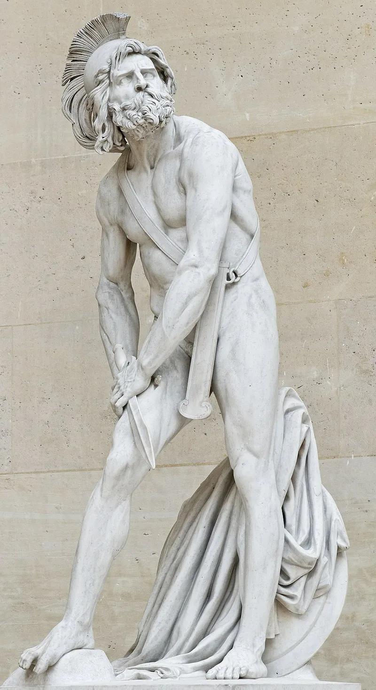
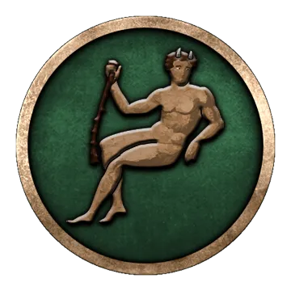
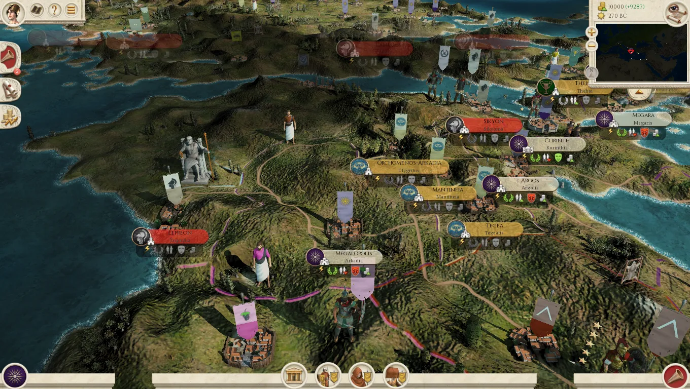
Megalopolitan Chalkaspides:
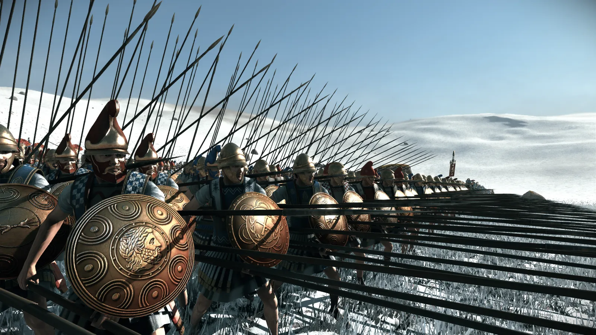
Peloponnesian Hoplites, available as AOR in the region:
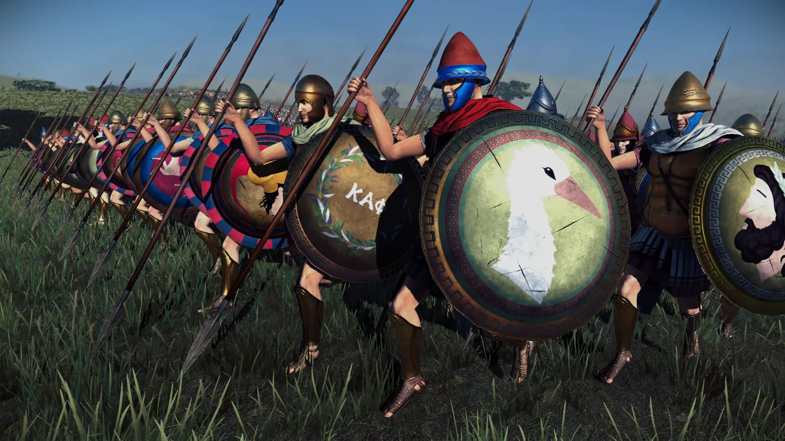
As you all can see, these additions flesh out Greece with plenty of factions and units, making for an entertaining regional campaign in the struggle for Hellenic Hegemony. Tell us about your favourites in a channel!